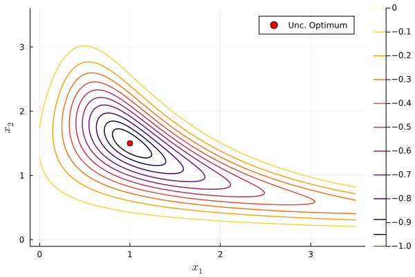
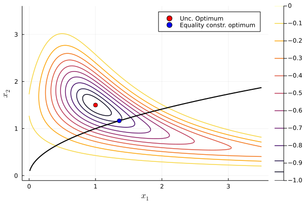
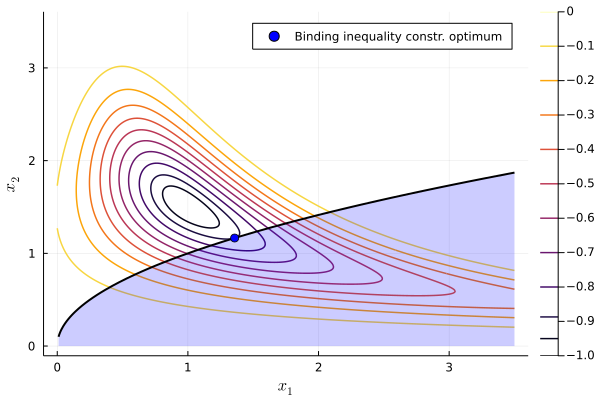
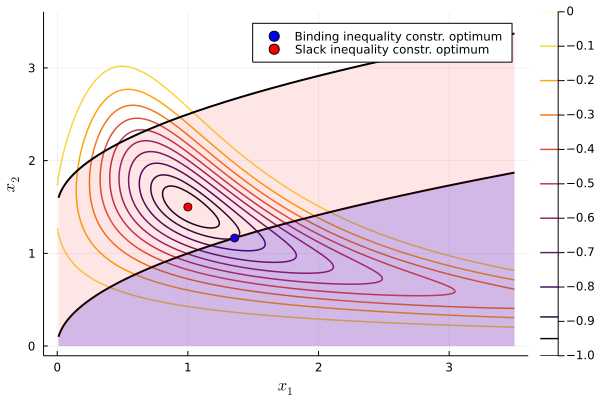
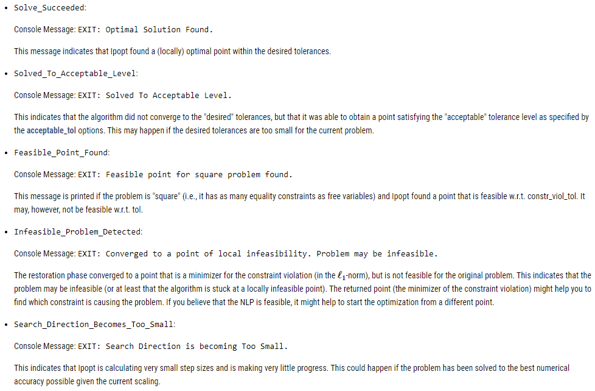
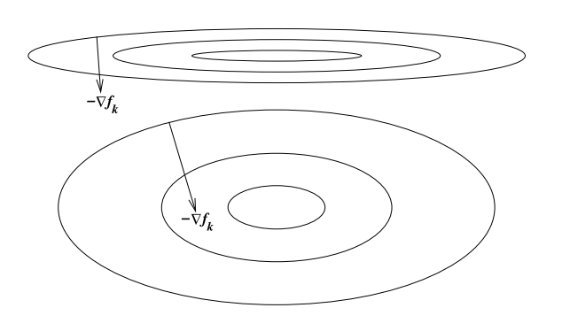

Code
using JuMP, Ipopt;Constrained optimization: modeling framework
We are going to cover a cool package called JuMP.jl
Most solvers can be accessed directly in their own packages
Optim.jl. . .
But JuMP gives us a unified way of specifying our models and switching between solvers
JuMP is specifically designed for constrained optimization but works with unconstrained too
Optim or NLopt directlyJuMP also solves MCPs in a much more user-friendly way than working directly with NLSolve.jl
There are 5 key steps:
mymodel = Model(SomeOptimizer). . .
@variable(mymodel, x >= 0). . .
@objective(mymodel, Min, 12x^0.7 + 20y^2)@constraint(mymodel, c1, 6x^2 - 2y >= 100). . .
optimize!(mymodel)!, so we are modifying mymodel and saving results in this objectLet’s use JuMP to solve the illustrative problem from the first slides
We will use solver Ipopt, which stands for Interior Point Optimizer. It’s a free solver we can access through package Ipopt.jl
using JuMP, Ipopt;Define the function: \min_x -exp\left(-(x_1 x_2 - 1.5)^2 - (x_2 - 1.5)^2 \right)
f(x_1,x_2) = -exp(-(x_1*x_2 - 3/2)^2 - (x_2-3/2)^2);Initialize the model for Ipopt
my_first_model = Model(Ipopt.Optimizer)A JuMP Model
├ solver: Ipopt
├ objective_sense: FEASIBILITY_SENSE
├ num_variables: 0
├ num_constraints: 0
└ Names registered in the model: none. . .
You can set optimzer parameters like this (there are TONS of parameters you can adjust (see the manual)
# This is relative tol. Default is 1e-8
set_optimizer_attribute(my_first_model, "tol", 1e-9) We will focus on non-negative values
@variable(my_first_model, x_1 >=0)$ x_1 $
@variable(my_first_model, x_2 >=0)$ x_2 $
@variable(my_model, x_1) to declare a x_1 as a free variablestart argument like this@variable(my_first_model, x_1 >=0, start = 0)@objective(my_first_model, Min, f(x_1,x_2))$ ({({{({{(x_1x_2 - 1.5)} ^ {2}})} - {(x_2^2 - 3 x_2 + 2.25)}})}) $
. . .
JuMP will use autodiff (with ForwardDiff package) by default. If you want to use your define gradient and Hessian, you need to “register” the function like this
register(my_first_model, :my_f, n, f, grad, hessian):my_f is the name you want to use inside model, n is the number of variables f takes, and grad hessian are user-defined functionsFirst, let’s solve the (mostly) unconstrained problem
x_1 and x_2Checking our model
print(my_first_model)\begin{aligned} \min\quad & \textsf{-}\left({\textsf{exp}\left({{\textsf{-}\left({{\left(x\_1\times x\_2 - 1.5\right)} ^ {2}}\right)} - {\left(x\_2^2 - 3 x\_2 + 2.25\right)}}\right)}\right)\\ \text{Subject to} \quad & x\_1 \geq 0\\ & x\_2 \geq 0\\ \end{aligned}
optimize!(my_first_model)This is Ipopt version 3.14.19, running with linear solver MUMPS 5.8.2.
Number of nonzeros in equality constraint Jacobian...: 0
Number of nonzeros in inequality constraint Jacobian.: 0
Number of nonzeros in Lagrangian Hessian.............: 3
Total number of variables............................: 2
variables with only lower bounds: 2
variables with lower and upper bounds: 0
variables with only upper bounds: 0
Total number of equality constraints.................: 0
Total number of inequality constraints...............: 0
inequality constraints with only lower bounds: 0
inequality constraints with lower and upper bounds: 0
inequality constraints with only upper bounds: 0
iter objective inf_pr inf_du lg(mu) ||d|| lg(rg) alpha_du alpha_pr ls
0 -1.1449605e-02 0.00e+00 1.03e+00 -1.0 0.00e+00 - 0.00e+00 0.00e+00 0
1 -1.5851349e-02 0.00e+00 5.92e-02 -1.0 1.00e-01 - 9.46e-01 1.00e+00f 1
2 -2.0400403e-02 0.00e+00 8.01e-02 -2.5 7.88e-02 0.0 1.00e+00 1.00e+00f 1
3 -5.7955817e-02 0.00e+00 1.59e-01 -2.5 3.13e-01 -0.5 5.40e-01 1.00e+00f 1
4 -3.2486363e-01 0.00e+00 6.94e-01 -2.5 4.79e-01 -0.1 9.28e-01 1.00e+00f 1
5 -9.8805653e-01 0.00e+00 3.06e-01 -2.5 1.76e+00 0.4 4.46e-01 2.50e-01f 3
6 -9.9994167e-01 0.00e+00 1.94e-02 -2.5 7.65e-02 - 1.00e+00 1.00e+00f 1
7 -1.0000000e+00 0.00e+00 6.69e-05 -3.8 6.16e-03 - 1.00e+00 1.00e+00f 1
8 -1.0000000e+00 0.00e+00 1.83e-09 -5.7 4.81e-05 - 1.00e+00 1.00e+00f 1
9 -1.0000000e+00 0.00e+00 4.78e-13 -8.6 4.09e-07 - 1.00e+00 1.00e+00f 1
iter objective inf_pr inf_du lg(mu) ||d|| lg(rg) alpha_du alpha_pr ls
10 -1.0000000e+00 0.00e+00 1.81e-15 -10.0 5.37e-10 - 1.00e+00 1.00e+00f 1
Number of Iterations....: 10
(scaled) (unscaled)
Objective...............: -9.9999999999999956e-01 -9.9999999999999956e-01
Dual infeasibility......: 1.8095926524754548e-15 1.8095926524754548e-15
Constraint violation....: 0.0000000000000000e+00 0.0000000000000000e+00
Variable bound violation: 0.0000000000000000e+00 0.0000000000000000e+00
Complementarity.........: 9.0909092205936933e-11 9.0909092205936933e-11
Overall NLP error.......: 9.0909092205936933e-11 9.0909092205936933e-11
Number of objective function evaluations = 17
Number of objective gradient evaluations = 11
Number of equality constraint evaluations = 0
Number of inequality constraint evaluations = 0
Number of equality constraint Jacobian evaluations = 0
Number of inequality constraint Jacobian evaluations = 0
Number of Lagrangian Hessian evaluations = 10
Total seconds in IPOPT = 0.002
EXIT: Optimal Solution Found.The return message is rather long and contains many details about the execution. You can turn this message off with
set_silent(my_first_model);We can check minimizers with
unc_x_1 = value(x_1)1.0000000000202018unc_x_2 = value(x_2)1.4999999999999998And the minimum with
unc_obj = objective_value(my_first_model)-0.9999999999999996
Let’s create a new model that now adds a nonlinear equality constraint x_1 = x_2^2
start. If we don’t do it, the solution will converge to another local minimum that is incorrect.my_model_eqcon = Model(Ipopt.Optimizer);
@variable(my_model_eqcon, x_1 >=0, start = 1.0);
@variable(my_model_eqcon, x_2 >=0, start = 1.0);
@objective(my_model_eqcon, Min, f(x_1, x_2));
@constraint(my_model_eqcon, -x_1 + x_2^2 == 0);print(my_model_eqcon)\begin{aligned} \min\quad & \textsf{-}\left({\textsf{exp}\left({{\textsf{-}\left({{\left(x\_1\times x\_2 - 1.5\right)} ^ {2}}\right)} - {\left(x\_2^2 - 3 x\_2 + 2.25\right)}}\right)}\right)\\ \text{Subject to} \quad & x\_2^2 - x\_1 = 0\\ & x\_1 \geq 0\\ & x\_2 \geq 0\\ \end{aligned}
Now let’s solve it
optimize!(my_model_eqcon)This is Ipopt version 3.14.19, running with linear solver MUMPS 5.8.2.
Number of nonzeros in equality constraint Jacobian...: 2
Number of nonzeros in inequality constraint Jacobian.: 0
Number of nonzeros in Lagrangian Hessian.............: 4
Total number of variables............................: 2
variables with only lower bounds: 2
variables with lower and upper bounds: 0
variables with only upper bounds: 0
Total number of equality constraints.................: 1
Total number of inequality constraints...............: 0
inequality constraints with only lower bounds: 0
inequality constraints with lower and upper bounds: 0
inequality constraints with only upper bounds: 0
iter objective inf_pr inf_du lg(mu) ||d|| lg(rg) alpha_du alpha_pr ls
0 -6.0653066e-01 0.00e+00 2.17e+00 -1.0 0.00e+00 - 0.00e+00 0.00e+00 0
1 -8.6248277e-01 4.95e-02 1.17e+00 -1.0 8.90e-01 - 5.53e-01 5.00e-01f 2
2 -8.8715068e-01 2.30e-03 3.89e-02 -1.0 6.78e-02 - 1.00e+00 1.00e+00h 1
3 -8.8798525e-01 7.75e-05 1.92e-03 -2.5 1.84e-02 - 1.00e+00 1.00e+00h 1
4 -8.8797477e-01 1.72e-07 4.56e-06 -3.8 8.88e-04 - 1.00e+00 1.00e+00h 1
5 -8.8797474e-01 1.52e-10 4.25e-09 -5.7 2.85e-05 - 1.00e+00 1.00e+00h 1
6 -8.8797474e-01 2.15e-14 5.91e-13 -8.6 3.44e-07 - 1.00e+00 1.00e+00h 1
Number of Iterations....: 6
(scaled) (unscaled)
Objective...............: -8.8797474226644846e-01 -8.8797474226644846e-01
Dual infeasibility......: 5.9061837706105664e-13 5.9061837706105664e-13
Constraint violation....: 2.1538326677728037e-14 2.1538326677728037e-14
Variable bound violation: 0.0000000000000000e+00 0.0000000000000000e+00
Complementarity.........: 2.5063705829534306e-09 2.5063705829534306e-09
Overall NLP error.......: 2.5063705829534306e-09 2.5063705829534306e-09
Number of objective function evaluations = 12
Number of objective gradient evaluations = 7
Number of equality constraint evaluations = 12
Number of inequality constraint evaluations = 0
Number of equality constraint Jacobian evaluations = 7
Number of inequality constraint Jacobian evaluations = 0
Number of Lagrangian Hessian evaluations = 6
Total seconds in IPOPT = 0.001
EXIT: Optimal Solution Found.eqcon_x_1 = value(x_1)1.3578043159950386eqcon_x_2 = value(x_2)1.1652486069483456value(-x_1 + x_2^2) # We can evaluate expressions too2.1538326677728037e-14eqcon_obj = objective_value(my_model_eqcon)-0.8879747422664485
Next, let’s now initialize a new model with inequality constraint -x_1 + x^2 \leq 0
my_model_ineqcon = Model(Ipopt.Optimizer);
@variable(my_model_ineqcon, x_1 >=0);
@variable(my_model_ineqcon, x_2 >=0);
@objective(my_model_ineqcon, Min, f(x_1, x_2));
@constraint(my_model_ineqcon, -x_1 + x_2^2 <= 0);
optimize!(my_model_ineqcon);This is Ipopt version 3.14.19, running with linear solver MUMPS 5.8.2.
Number of nonzeros in equality constraint Jacobian...: 0
Number of nonzeros in inequality constraint Jacobian.: 2
Number of nonzeros in Lagrangian Hessian.............: 4
Total number of variables............................: 2
variables with only lower bounds: 2
variables with lower and upper bounds: 0
variables with only upper bounds: 0
Total number of equality constraints.................: 0
Total number of inequality constraints...............: 1
inequality constraints with only lower bounds: 0
inequality constraints with lower and upper bounds: 0
inequality constraints with only upper bounds: 1
iter objective inf_pr inf_du lg(mu) ||d|| lg(rg) alpha_du alpha_pr ls
0 -1.1449605e-02 0.00e+00 1.03e+00 -1.0 0.00e+00 - 0.00e+00 0.00e+00 0
1 -1.5854730e-02 0.00e+00 1.19e-01 -1.0 1.01e-01 - 8.94e-01 1.00e+00f 1
2 -2.3961281e-02 0.00e+00 9.81e-02 -2.5 1.23e-01 - 5.75e-01 1.00e+00h 1
3 -3.5003934e-02 0.00e+00 1.02e-01 -2.5 1.08e-01 0.0 1.00e+00 1.00e+00h 1
4 -9.4823477e-01 9.72e-01 5.53e-01 -2.5 2.08e+00 -0.5 1.55e-01 5.00e-01f 2
5 -9.6090312e-01 8.92e-01 4.52e-01 -2.5 6.55e-01 - 1.00e+00 1.83e-01h 1
6 -8.8648990e-01 2.74e-02 2.41e-01 -2.5 3.17e-01 - 1.00e+00 1.00e+00h 1
7 -8.8504642e-01 0.00e+00 1.42e-02 -2.5 6.45e-02 - 1.00e+00 1.00e+00h 1
8 -8.8775756e-01 0.00e+00 1.15e-04 -3.8 1.59e-02 - 1.00e+00 1.00e+00h 1
9 -8.8797273e-01 0.00e+00 4.64e-07 -5.7 1.28e-03 - 1.00e+00 1.00e+00h 1
iter objective inf_pr inf_du lg(mu) ||d|| lg(rg) alpha_du alpha_pr ls
10 -8.8797474e-01 0.00e+00 4.40e-11 -8.6 1.19e-05 - 1.00e+00 1.00e+00h 1
Number of Iterations....: 10
(scaled) (unscaled)
Objective...............: -8.8797474144904420e-01 -8.8797474144904420e-01
Dual infeasibility......: 4.4034561945229721e-11 4.4034561945229721e-11
Constraint violation....: 0.0000000000000000e+00 0.0000000000000000e+00
Variable bound violation: 0.0000000000000000e+00 0.0000000000000000e+00
Complementarity.........: 2.5196089194342299e-09 2.5196089194342299e-09
Overall NLP error.......: 2.5196089194342299e-09 2.5196089194342299e-09
Number of objective function evaluations = 14
Number of objective gradient evaluations = 11
Number of equality constraint evaluations = 0
Number of inequality constraint evaluations = 14
Number of equality constraint Jacobian evaluations = 0
Number of inequality constraint Jacobian evaluations = 11
Number of Lagrangian Hessian evaluations = 10
Total seconds in IPOPT = 0.002
EXIT: Optimal Solution Found.ineqcon_x_1 = value(x_1)1.3578043178154473ineqcon_x_2 = value(x_2)1.1652486056670581ineqcon_obj = objective_value(my_model_ineqcon)-0.8879747414490442Same results as in the equality constraint: the constraint is binding

What if instead we use inequality constraint -x_1 + x^2 \leq 1.5?
my_model_ineqcon_2 = Model(Ipopt.Optimizer);
@variable(my_model_ineqcon_2, x_1 >=0);
@variable(my_model_ineqcon_2, x_2 >=0);
@objective(my_model_ineqcon_2, Min, f(x_1, x_2));
@constraint(my_model_ineqcon_2, c1, -x_1 + x_2^2 <= 1.5);
optimize!(my_model_ineqcon_2);This is Ipopt version 3.14.19, running with linear solver MUMPS 5.8.2.
Number of nonzeros in equality constraint Jacobian...: 0
Number of nonzeros in inequality constraint Jacobian.: 2
Number of nonzeros in Lagrangian Hessian.............: 4
Total number of variables............................: 2
variables with only lower bounds: 2
variables with lower and upper bounds: 0
variables with only upper bounds: 0
Total number of equality constraints.................: 0
Total number of inequality constraints...............: 1
inequality constraints with only lower bounds: 0
inequality constraints with lower and upper bounds: 0
inequality constraints with only upper bounds: 1
iter objective inf_pr inf_du lg(mu) ||d|| lg(rg) alpha_du alpha_pr ls
0 -1.1449605e-02 0.00e+00 1.03e+00 -1.0 0.00e+00 - 0.00e+00 0.00e+00 0
1 -1.5850397e-02 0.00e+00 5.90e-02 -1.0 1.00e-01 - 9.48e-01 1.00e+00f 1
2 -2.0385980e-02 0.00e+00 7.93e-02 -2.5 7.82e-02 0.0 1.00e+00 1.00e+00h 1
3 -5.7025390e-02 0.00e+00 1.59e-01 -2.5 3.10e-01 -0.5 5.44e-01 1.00e+00h 1
4 -2.5193623e-01 0.00e+00 5.01e-01 -2.5 3.49e-01 -0.1 7.98e-01 1.00e+00h 1
5 -8.9618378e-01 0.00e+00 1.57e+00 -2.5 7.27e-01 0.4 1.00e+00 1.00e+00f 1
6 -9.6541187e-01 1.22e-01 6.65e-01 -2.5 1.84e+00 - 1.00e+00 7.20e-01h 1
7 -9.9523888e-01 0.00e+00 8.42e-02 -2.5 5.13e-01 - 1.00e+00 1.00e+00f 1
8 -9.9837590e-01 0.00e+00 3.44e-03 -2.5 1.16e-01 - 1.00e+00 1.00e+00h 1
9 -9.9987546e-01 0.00e+00 2.44e-03 -3.8 1.08e-01 - 1.00e+00 1.00e+00h 1
iter objective inf_pr inf_du lg(mu) ||d|| lg(rg) alpha_du alpha_pr ls
10 -9.9999483e-01 0.00e+00 1.88e-04 -3.8 3.37e-02 - 1.00e+00 1.00e+00h 1
11 -9.9999999e-01 0.00e+00 1.26e-05 -5.7 8.23e-03 - 1.00e+00 1.00e+00h 1
12 -1.0000000e+00 0.00e+00 1.83e-08 -8.6 3.23e-04 - 1.00e+00 1.00e+00h 1
13 -1.0000000e+00 0.00e+00 4.65e-14 -9.0 4.66e-07 - 1.00e+00 1.00e+00h 1
Number of Iterations....: 13
(scaled) (unscaled)
Objective...............: -1.0000000000000000e+00 -1.0000000000000000e+00
Dual infeasibility......: 4.6486804967210195e-14 4.6486804967210195e-14
Constraint violation....: 0.0000000000000000e+00 0.0000000000000000e+00
Variable bound violation: 0.0000000000000000e+00 0.0000000000000000e+00
Complementarity.........: 9.0912126294342428e-10 9.0912126294342428e-10
Overall NLP error.......: 9.0912126294342428e-10 9.0912126294342428e-10
Number of objective function evaluations = 14
Number of objective gradient evaluations = 14
Number of equality constraint evaluations = 0
Number of inequality constraint evaluations = 14
Number of equality constraint Jacobian evaluations = 0
Number of inequality constraint Jacobian evaluations = 14
Number of Lagrangian Hessian evaluations = 13
Total seconds in IPOPT = 0.002
EXIT: Optimal Solution Found.ineqcon2_obj = objective_value(my_model_ineqcon_2)-1.0ineqcon2_x_1 = value(x_1)1.0000000054547011ineqcon2_x_2 = value(x_2)1.4999999933331216We get the same results as in the unconstrained case

Plug in your guess, let the solver go, and you’re done right?
. . .
WRONG!
. . .
These algorithms are not guaranteed to always find even a local solution, you need to test and make sure you are converging correctly
Return codes (or exit flags) tell you why the solver stopped
JuMP you can use @show termination_status(mymodel)READ THE SOLVER DOCUMENTATION!
. . .
Use trace options to get a sense of what went wrong
Examples from Ipopt.jl documentation

Optimization is approximately 53% art
. . .
Not all algorithms are suited for every problem \rightarrow it is useful to check how different algorithms perform
. . .
Interior-point is usually the default in constrained optimization solvers (low memory usage, fast), but try other algorithms and see if the solution generally remains the same
The scaling of a problem matters for optimization performance
. . .
A problem is poorly scaled if changes to x in a certain direction produce much bigger changes in f than changes to in x in another direction
. . .

Ex: f(x) = 10^9 x_1^2 + x_2^2 is poorly scaled
. . .
This happens when things change at different rates:
. . .
How do we solve this issue?
. . .
Rescale the problem: put them in units that are generally within an order of magnitude of 1
Two main tolerances in optimization:
ftol is the tolerance for the change in the function value (absolute and relative)xtol is the tolerance for the change in the input values (absolute and relative). . .
What is a suitable tolerance?
It depends
. . .
Explore sensitivity to tolerance, typically pick a conservative (small) number
1e-6If you are using simulation-based estimators or estimators that depend on successive optimizations, be even more conservative because errors compound
May be a substantial trade-off between accuracy of your solution and speed
. . .
Common bad practice is to pick a larger tolerance (e.g. 1e-3) so the problem “works” (e.g. so your big MLE converges)
. . .
Issue is that 1e-3 might be pretty big for your problem if you haven’t checked that your solution is not sensitive to the tolerance
Initial guesses matter
. . .
Good ones can improve performance
. . .
Bad ones can give you terrible performance, or wrong answers if your problem isn’t perfect